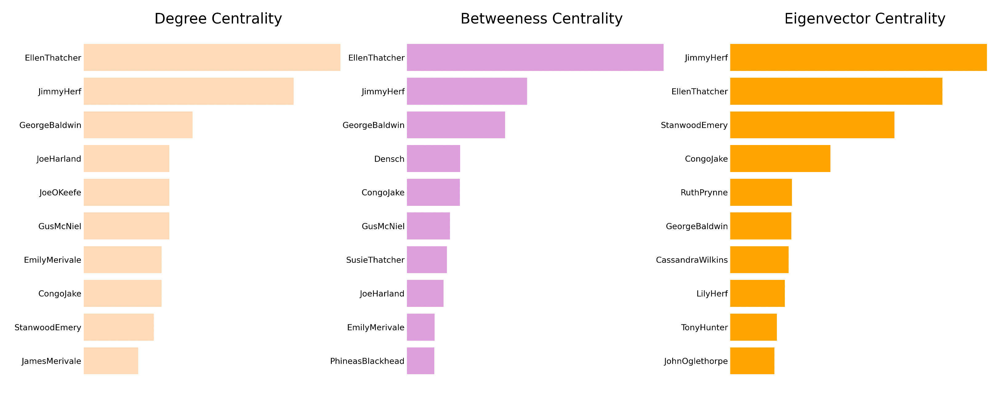

MANHATTAN TRANSFER: A NETWORK ANALYSIS
A network analysis based on characters interactions
Abstract: Abstract about the network analysis of Manhattan Transfer using python
Introduction
This work deals with the network analysis of John Dos Passos’ novel Manhattan Transfer, published in 1925. It is set in New York in the 1920s. It is set in New York from the 1890s to the late 1920s and deals with the life of some inhabitants of the city in this time full of contradictions.
The novel is divided into three sections, each section is divided in chapters. The narration is non-linear, inspired to a cinematographic style. Each chapter features several different characters, and their stories intertwine to provide the reader with a complete picture of New York City in its so called Gilded Age.
This paper presents a network analysis of Manhattan Transfer based on the interaction among characters within the novel. The following sections feature the goals and premises to the analysis. It follows a chapter on methodology, divided into three subsections that feature an explanation of the encoding of the text of the novel, a panoramic on the use of Python to develop a network based on characters interaction and to extract centrality measures, and a last section related to the graph visualization using the software Gephi. The following chapter comments the results based on the graphs for each section of the novel and on the full text, as well as the related centrality measures.
The last section features a discussion of the result based on the novel, followed by a conclusive chapter.

Goals
This analysis aims at presenting links and interactions between characters of the novel Manhattan Transfer with the use of computational tools, to provide additional insights on the feature of Dos Passos’s work. Interactions between individuals are represented in networks developed from each section of the novel. These networks are represented as undirected graphs having characters as nodes and their interactions as edges. The comparison of the graphs allows to observe the development of the relevance of the characters throughout the novel and draw conclusions on their role in it.
Premises
The development of graphs based on characters interactions required the definition of the concept of interaction. For the sake of this analysis, an interaction between two individuals in the novel is present if the value of the distance value between two characters’ appearance in the text is less than 15. An appearance is better defined as a mention of a character’s name or the presence of a character’s speech or thought in the text. Distance between such appearances is measured as the difference between words indexes between the characters’ mentions. Character’s appearances are signalized through name-based IDs provided in the text encoding, as explained in section TEI Encoding.
The distance value of 15 was adopted after comparing the different results obtained by adopting the threshold values of 10, 20 and 30, since the graphs obtained in the first case were more representative of the relations between characters of the novel. Due to Dos Passos non-linear narrative style and his way of jumping from storyline to storyline within few paragraphs, some links between characters who do not interact in the novel were included in the graph. This happens because their names appear within an interval of 15 words due to an abrupt change of setting by the author. The value 15, however was selected as it provided the best compromise in this situation. A value of 30 would have led to the inclusion of non-existing interaction in the graph, while a value of 10 would not have allowed the inclusion of significant connections.
In order to filter out links between characters with less frequent interactions and partly solve this issue, a threshold representing the minimum number of 3 interactions was implemented. This prevented the inclusion of connections in the graph that were not representative of the interactions in the novel.
A further necessary premise is related to the of centrality measures used in this analysis. To compare character’s roles and relevance in the novel, three centrality measures were considered: Degree Centrality, Betweenness Centrality and Eigenvector Centrality.
Degree Centrality
Betweenness Centrality
Eigenvector Centrality
Methodology
a. Text Encoding
b. Network and centrality measures with Python + Jupyter Notebook
c. Graph visualization with Gephi
Results
1. Section 1
i. Content
ii. Graph Description
The graph representing the interactions among characters in the first section has 24 nodes, representing the characters, and 33 edges, representing their interactions. It is an undirected graph, meaning that the edges connecting the characters do not follow a direction.
The first possible observation is that this graph consists of four separated communities with different dimensions.
The largest community takes up 29,17% of the graph and consists of seven members. Characters in this community are Jimmy Herf and his family: his aunt and uncle Emily and Jefferson Merivale, his cousins James and Maisie Merivale, his cousin Joe Harland and his mother Lily Herf. Jimmy Herf and Emily Merivale show the highest degree of the community, 6, followed by the other characters with degrees of 3 or 4.
The second community also takes up 29,17% and consists of seven characters: Ellen Thatcher, Susie Thatcher, Ed Thatcher, Alice Vaughan, John Oglethorpe, Marcus Antonius Zucher and Rosie Silverman. Ellen Thatcher has a degree of 4, the highest of the community, followed by a degree of 3 of her parents, while the other characters of this community all have a degree of 1.
The third largest community consists of six members and takes up 25% of the entire graph. The main figures are George Baldwin, Gus McNiel and Nellie McNiel; George Baldwin is connected to 2 further characters, Philip Sandbourne and Specker and shares a connection to Mr. Emery with Nellie McNiel. George Baldwin has the highest degree of 5 in his community, followed by Nellie McNiel with a degree of 3.
The fourth and last community consists of four characters, Emile Loustec, Congo Jake, Ernestine Rigaud, and Marco Olafson, and takes up 16,67% of the graph. Their degrees range from 1 to 3, with Emile Loustec with a degree of 3.
It is possible to observe that the largest networks are the ones of the characters with the highest degree, Jimmy Herf and Emily Merivale, and Ellen Thatcher.
Differently from the graphs under examination in the next sections, here the represented communities are disconnected since the first section follows the story of each community independently, while characters from different communities will meet later on in the novel.
iii. Centrality Measures

iv. Interpretation
2. Section 2
i. Content
ii. Graph Description
iii. Centrality Measures

iv. Interpretation
3. Section 3
i. Content
ii. Graph Description

iii. Centrality Measures

iv. Interpretation
4. Full Text
i. Content
ii. Graph Description

iii. Centrality Measures
iv. Interpretation
Discussion
Conclusion
Conclusion about the network analysis: relevant characters, differences among sections, among centrality measures etc., further possible analysis etc.